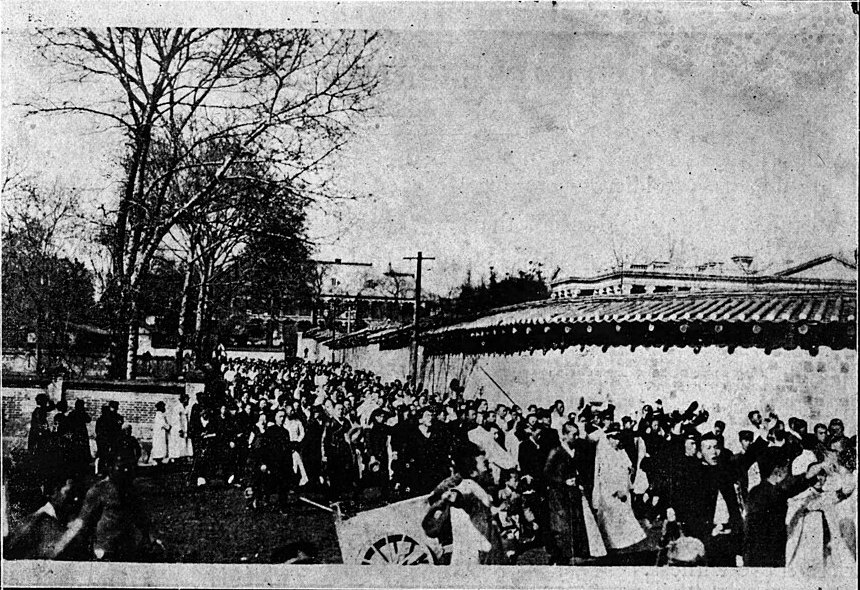
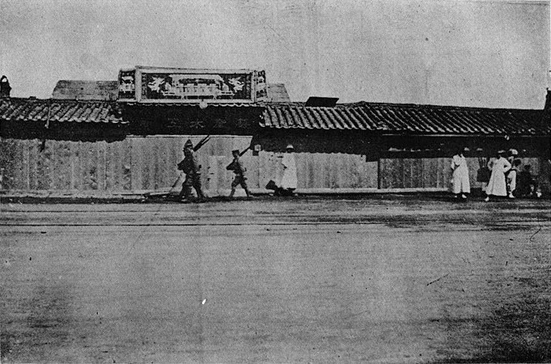
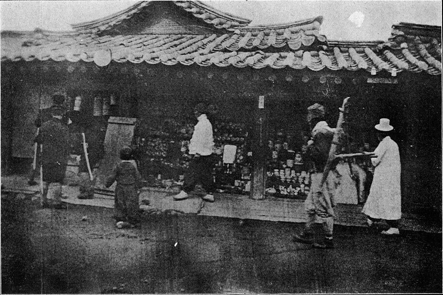
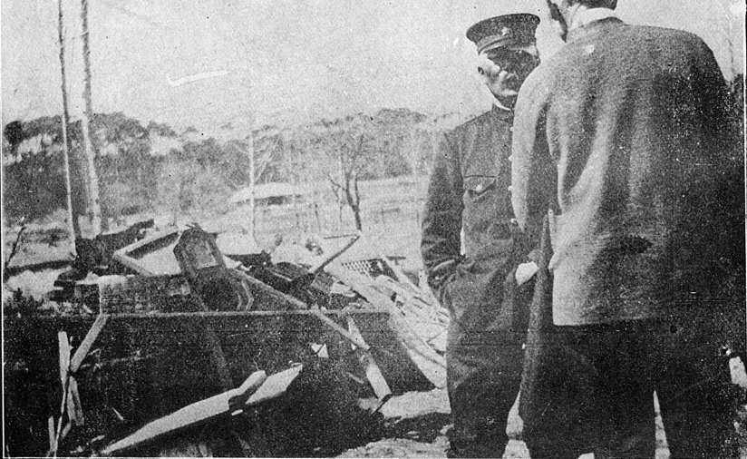
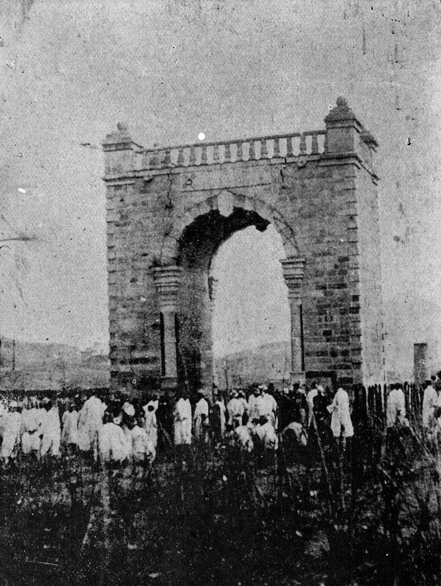

사진 · 1919년 만세 시위
중학교 역사② · 고등 한국사2
19193·1 운동 — 총 없는 싸움
대한적십자회 팸플릿(1919) KADA-shyun15-012~10 · Wikimedia Commons 퍼블릭 도메인 · 원 소장 USC KADA(인쇄 복제는 허가 필요)
“총 한 자루 없이,
총 한 자루 없이,
무엇으로 싸웠을까?
사실누가, 어디에서 외쳤나
해석왜 ‘비폭력’이었을까
확장그 힘은 지금 어디에 남아 있을까
사진 · 만세 시위 군중
이 사진에서
무엇이 보이나?
보기사람 · 옷 · 손 · 거리
생각누가 모였을까
궁금사진이 말하지 않는 것은?
KADA-shyun15-012~10 · Wikimedia Commons 퍼블릭 도메인 · 원 소장 USC KADA(인쇄 복제는 허가 필요)
만세
누구를 위한 만세였을까?

사진 · 문 닫은 상점(철시)
닫다

사진 · 강제로 연 상점
열게 하다
총을 가진 쪽이
왜 가게 문을 두려워했을까?
KADA-shyun15-012~26 · ~28 · Wikimedia Commons 퍼블릭 도메인 · 원 소장 USC KADA(인쇄 복제는 허가 필요)
학생교실
상인가게
농민장터
여성거리
7,509
누가 센 숫자일까?
사료박은식 『한국독립운동지혈사』 · 일제 측 기록 · 국사편찬위원회
같은 사건, 다른 숫자 — 왜?

사진 · 화수리 마을의 불탄 자리
탄압비폭력에 대한 대답
KADA-shyun15-012~29 · Wikimedia Commons 퍼블릭 도메인 · 원 소장 USC KADA(인쇄 복제는 허가 필요)

사진 · 독립문 위 태극기를 바라보는 사람들
이 사진들은
누구에게 보여 주려고
만들었을까?
단서1919 · 영어 · 미국
더 깊이사진은 사실일까, 주장일까?
KADA-shyun15-012~42 · Wikimedia Commons 퍼블릭 도메인 · 원 소장 USC KADA(인쇄 복제는 허가 필요)
실패한 운동일까?
임시정부1919. 4.
통치 변화1920년대
5·4 운동중국 1919. 5.
帝國 → 民國
한 글자가 바뀌면, 무엇이 바뀔까?
“3·1 운동의 힘은 이었다.